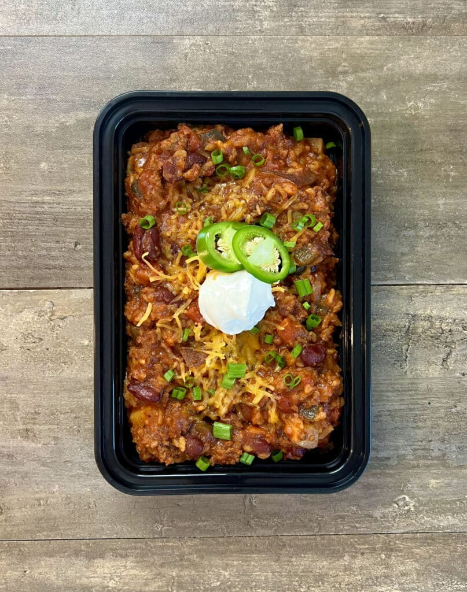

Big Boy Chili
Back

DESCRIPTION
This Chili recipe is the perfect meal for people who are trying to
gain weight and muscle during a bulking phase. It has over 1,000
calories when paired with a cornbread muffin to give you the energy
density you need to build muscle.
INGREDIENTS
FOR THE CHILI
- 2 lbs (908 g) 85/15 beef
- ½ lb (227 g) potatoes
- 1 (150 g) medium poblano pepper
- 1 (150 g) small onion
- 1 Tbsp (15 g) minced garlic
- 4 (20 g) stalks green onions
- 1 (20 g) medium jalapeño
- 2 tbsp (16 g) chili powder
- 1 Tbsp (8 g) smoked paprika
- 1 Tbsp (6 g) cumin
- 1 tsp (3 g) cayenne pepper
- 1 cup (200 g) dry rice
- 29 oz can (822 g) tomato sauce
- 14.5 oz can (411 g) petite diced tomatoes
- 14.5 oz can (411 g) beef broth
- 15.5 oz can (439 g) red kidney beans
- ½ cup (56 g) shredded cheese
- 5 tbsp (70 g) sour cream
FOR THE CORNBREAD
- ½ cup (60 g) all purpose flour
- ½ cup (72 g) yellow cornmeal
- 1 tsp (4 g) baking powder
- ¼ tsp (1 g) salt
- 1 egg
- ¼ cup (48 g) sugar
- ½ cup (120 g) milk
- 2 tbsp (30 g) oil
INSTRUCTIONS
FOR THE CHILI
- Heat a large pot over medium high heat and add in your beef,
allowing the fat to render out and the meat to brown. Season
lightly with salt and pepper.
- While the beef is cooking, wash and cut all of your vegetables.
Cut the potatoes into a large dice, onion into a small dice, the
poblano into a medium dice, the green onions into small slices
and the jalapeño into thin slices.
- When the beef is about 90% of the way cooked, move it to the
perimeter of the pot and allow the fat to pool in the center.
Dump the chili powder, paprika, cumin, and cayenne pepper into
the oil and allow the spices to bloom for 30 seconds or so.
- Mix the spices into the beef and add in the onions and peppers.
Allow those to cook for 1 to 2 minutes then add in the garlic,
potatoes, and rice. Stir to combine.
- Add in the tomato sauce, diced tomatoes, broth, and beans. Bring
to a light boil, reduce the heat to medium low and cover. Simmer
for 20-30 minutes or until the potatoes have softened and rice
has cooked.
- This is a thick chili. If you want a soupier consistency, add
more broth or water.
FOR THE CORNBREAD
- While the chili is stewing, start the cornbread.
- In a large bowl mix together the dry ingredients until combined
and no clumps remain.
- In a separate bowl, crack an egg and beat it.
- Add in the sugar, milk, and oil. Mix until the oil has combined
with the other ingredients and the sugar has dissolved.
- Combine the wet ingredients into the dry ingredients and stir
until smooth.
- Spray 5 wells of a muffin tin with oil and divide the batter
evenly 5 ways. You can also cook this in a cake pan, it may
affect the time though.
- Bake at 400°F (204°C) for 15 minutes or until the tops just start to brown.
FOR THE CHILI
- After the chili has been stewing for 20-30 minutes, remove the
lid and test the rice and potatoes for doneness. Season with salt
and pepper to taste.
PLATING
- This recipe makes 5 servings. Divide the contents of the pot
evenly between 5 meal prep containers. Divide ½ cup (56)g of cheese
between the containers. Also top them with 1 tbsp or 14g of sour cream.
Each dish gets a sprinkling of green onions and a few jalapeño slices.
- To store the cornbread, I just wrap it in foil and place it on the counter.